03 色即是空：世界经济的共生模式与国际资源品价格调节新机制
"色即是空"——佛说一切表象最终都要回归本质。资源品市场也是这样：无论价格怎么疯狂，最终都会被打回原形。
1970年代的石油危机导致全球经济"滞胀"（经济停滞+物价飞涨），资源品价格的暴涨最终通过制造一场大衰退来"自我调节"。但这一轮资源品涨价很奇怪——大宗商品价格狂飙，世界经济却高增长、低通胀。这到底是怎么回事？资源品价格还会不会涨？这对投资意味着什么？这些问题，无论对世界经济还是对个人的钱包，都是核心中的核心。
作者反对用“中国需求”“美元计价”或“流动性”中的任何一个词单独解释商品牛市。中国和其他新兴经济体属于全球产业链，美元还决定这套分工能否持续；商品上涨与低通胀并存，也不能简单归因于资金只流入虚拟市场。必须把供需、产业分工和货币体系放在同一框架中。
"劳动是财富之父，土地是财富之母"——这里的"土地"指的是所有自然资源。整个工业体系无非建立在三类资源上：金属系（铜、铝、铁等）、非金属系（石油化工）、农业资源系。资源是现代经济的根基。
两点启示：
① 资源品价格牵一发而动全身。经济增长就是不断突破约束的过程。资源约束是最典型的约束——资源不够用了，整个经济就被卡住脖子。资源约束往往触发金融约束和需求约束，共同引发经济衰退。
② 供需是最基本的决定因素。期货、投机、美元标价……都是表面现象。罗杰斯说得好：商品不神秘，大牛市和大熊市不是天上掉下来的。供应充足→价格跌；供应枯竭+需求增长→价格涨。就这么简单。
下面图3-1展示了主要资源品（石油、金属、农产品）如何对应着制造业的各个产业链——从矿山油田一直延伸到我们日常用的汽车、手机、房子。图3-2则是世界经济GDP增长率的历史走势，可以看到资源品大牛市和全球经济周期之间的对应关系：
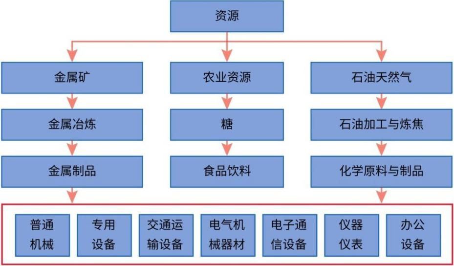
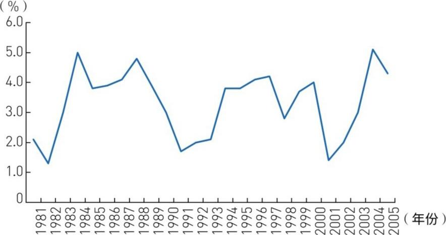
商品价格既反映现实供需，也包含市场预期和投机。研究历史价格与经济增长、供给能力之间的关系，可以帮助判断当前行情处于周期的哪个位置。
看历史数据，大宗商品价格跟着经济周期走——经济繁荣资源涨，经济衰退资源跌。以CRB和GSCI两个权威商品指数来看，1980年代以来两个完整的中周期里，商品价格和全球GDP走势高度一致。所以，判断资源品周期，看经济增长中周期就行。
但问题是：这轮世界经济和中国经济的高点都在2004年结束了，按理说资源品价格该跌了——可2005-2006年它们还在高位扛着。这说明资源品市场有相对独立性，经济见顶了它不一定马上跌。那它的"均衡位置"到底在哪里？
同样是涨，有大涨和小涨之分：1980年代和1990年代的资源品上涨只是"小波澜"，而1970年代和2000年代这次才是"大牛市"——涨幅远远超过普通周期波动。
大牛市的配方是什么？长波衰退 + 中周期强劲反弹。
长波（50-60年）衰退期间，资源行业的投资长期不足，供给能力持续减弱。但中周期（9-10年）的强劲反弹一来，需求突然暴增——供给长期萎缩 + 需求短期爆发 = 供需极度冲突 = 大牛市。
下面这一组图（图3-3到图3-7）从不同角度展示了商品价格与经济周期的同步性：CRB和GSCI指数的长期走势、铜价的周期性波动、商品指数与GDP增速的正相关关系、黄金价格与GDP的关联，以及1960年以来CRB的长期变化趋势——都指向同一个结论：商品价格跟着经济周期走。
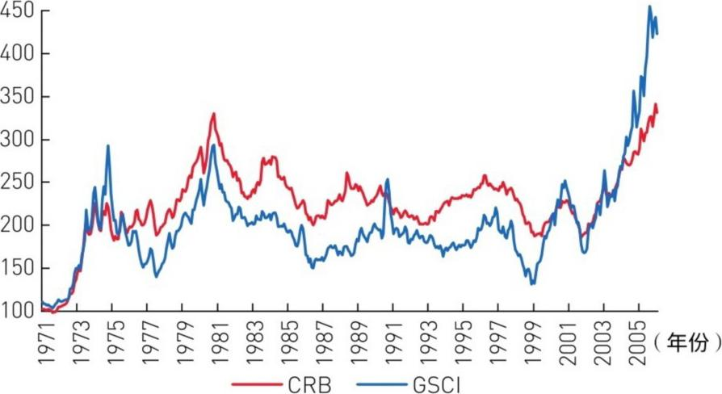
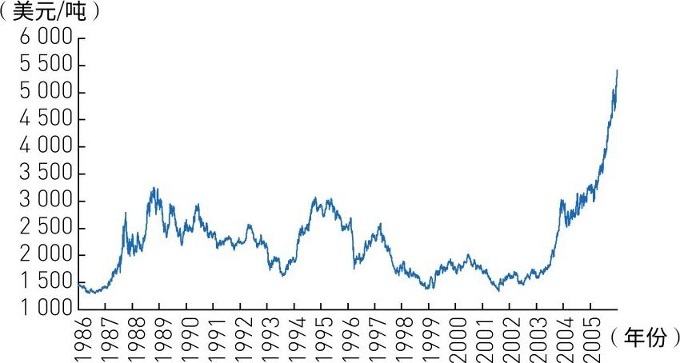
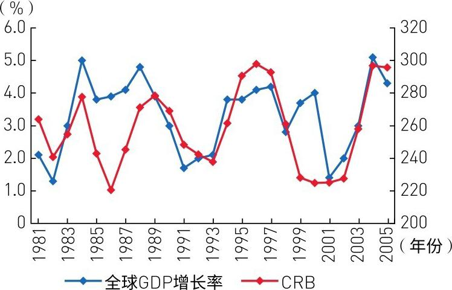
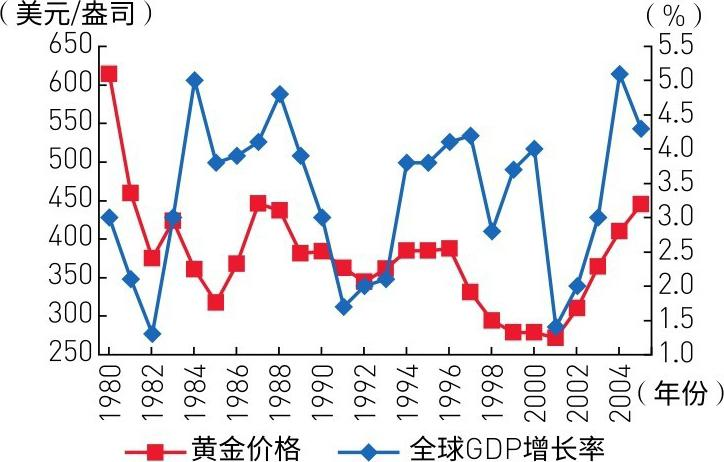
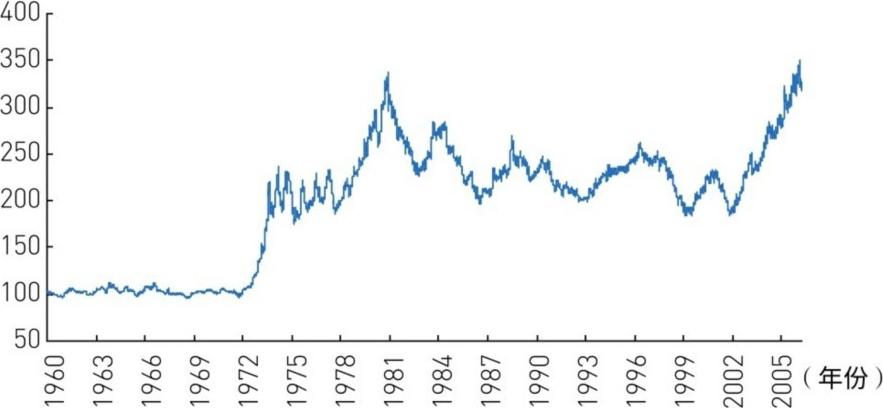
历史验证了这个配方：1920年代和1970年代——两次资源大牛市，都发生在长波衰退/萧条期。2000-2008年正好是第五次长波的衰退阶段，所以这次大牛市不是偶然。但要注意：当长周期+中周期一起衰退时，资源价格就会崩盘。
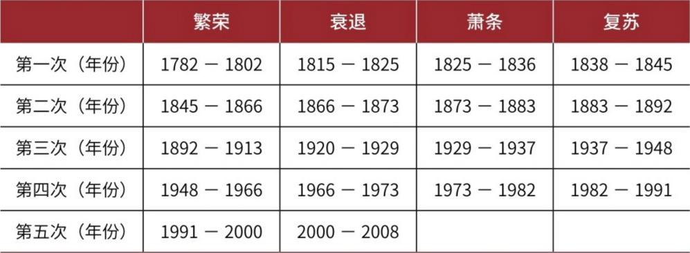
1970年代资源涨价→全球滞胀→需求崩溃→资源跌回来。这套"自愈"机制的关键前提是：生产者和消费者在同一个经济体里，而且政府可以居中调节。但这个世界已经变了——全球化把生产、消费、资源国拆成了三个阵营。
图3-8展示了封闭经济条件下资源品价格的自动调节机制，图3-9和图3-10分别展示了1970年代商品价格走势以及全球GDP和CPI的关系——正是滞胀时代的经典画像：
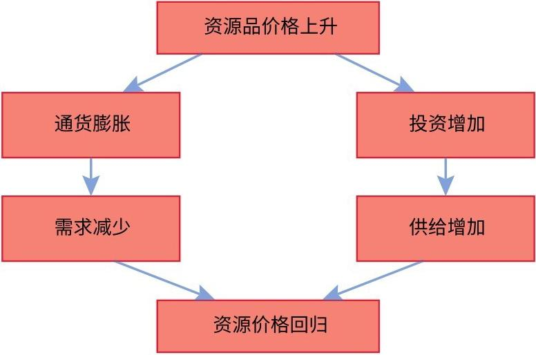
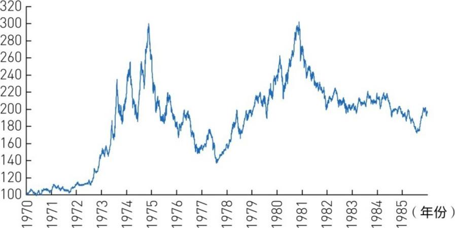
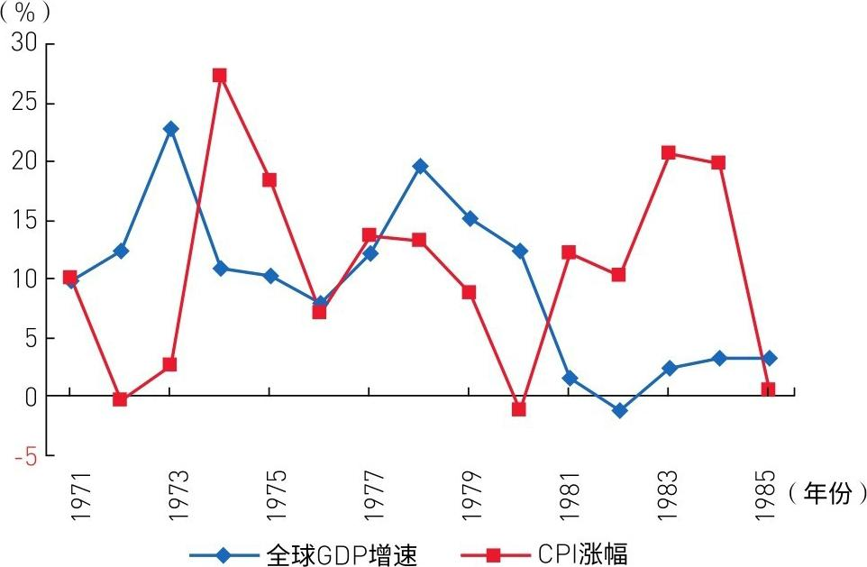
流行的说法是：中国崛起 → 中国大量消耗资源 → 全球资源涨价。这就是所谓"中国因素"。听上去很有道理——中国确实是各种资源的第一大进口国。
但这个说法忽略了两件事：
① 制造业是转移到中国的。日本、韩国、中国台湾、中国香港把工厂搬到了中国大陆——以前他们消耗资源，现在变成中国替他们消耗。
② 中国经济靠外需拉动。中国生产的商品，三四成是卖给欧美消费者的。中国消耗的资源，有很大一部分是为全世界消耗的。
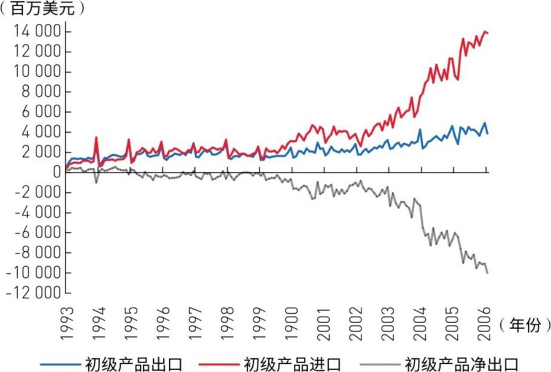
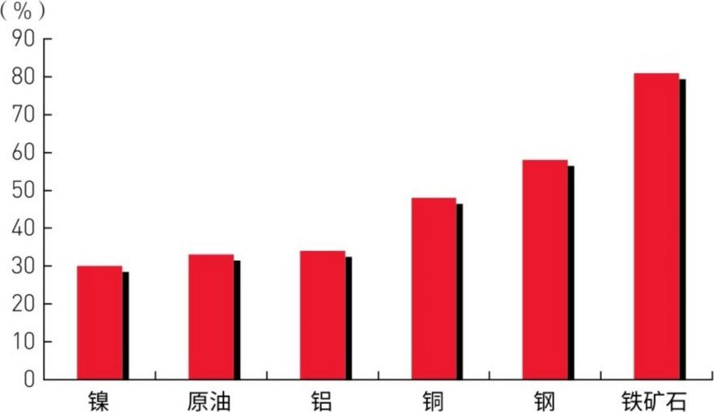
铁证：美国1985年的最大逆差来源是日本、韩国、中国台湾、中国香港。2003年变成了中国大陆。这不是中国"抢了"全世界的生意，而是全世界的工厂搬到了中国。中国GDP只占全球3.5%，却生产了全球7%的制造业产品——超出一倍的产能，全是替别人生产的。
中国的贸易结构像一个加工枢纽：从亚洲、拉美和澳洲进口零部件、原料和能源，在国内加工，再把制成品卖给欧美。中国资源需求因此包含大量欧美最终消费。
初级品进口与制成品出口同步增长，2004年出口工业品已接近工业总产值的35%。作者据此估算，中国当时三到四成的资源消耗实际上服务于海外需求，是全球复苏通过中国制造传导的结果。
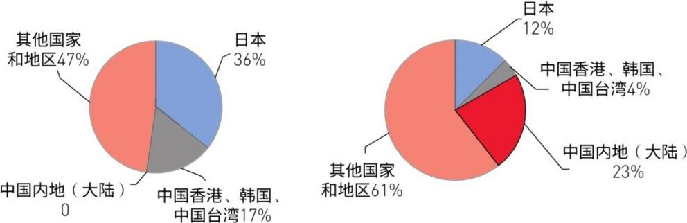
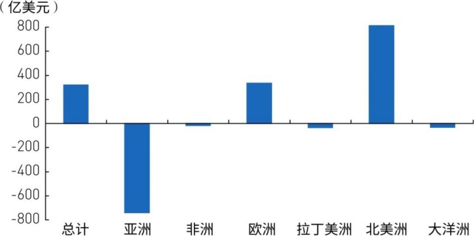
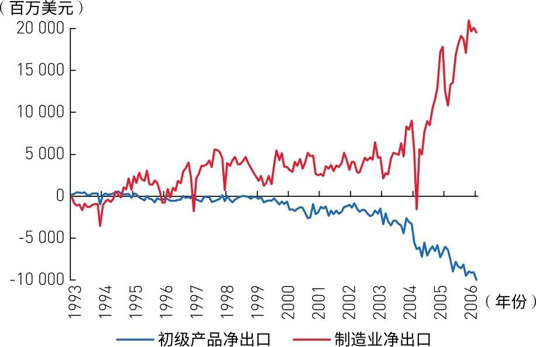
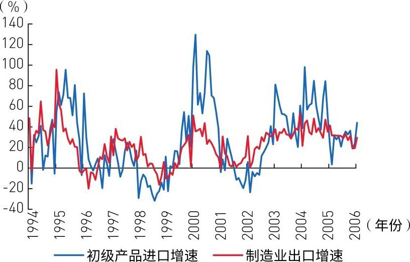
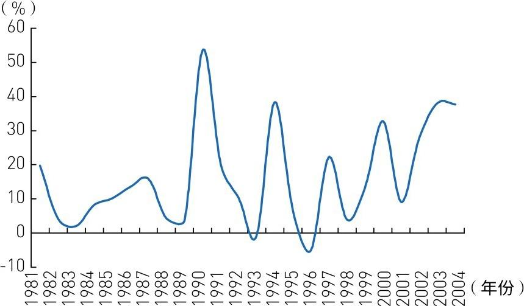
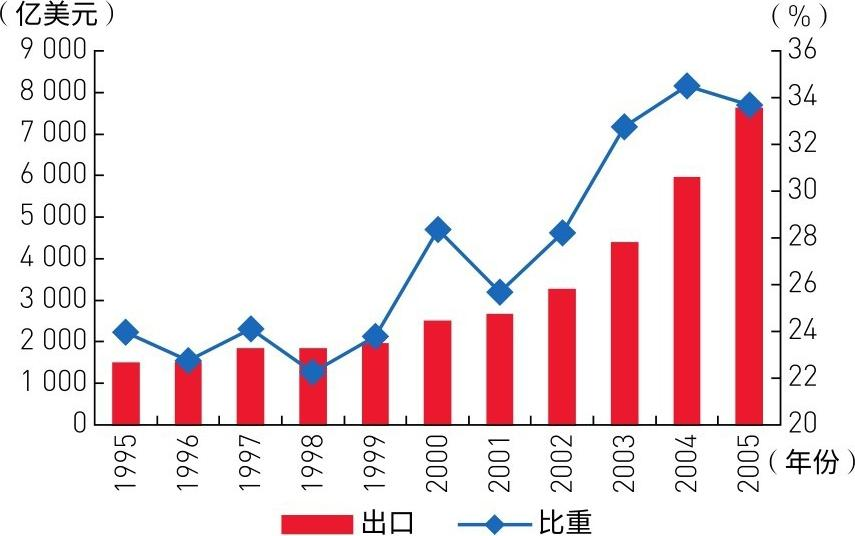
因此，“中国因素”不能脱离全球需求单独理解。制造业只是换了地理位置，中国及其他新兴经济体仍是同一产业链中的环节，会随全球周期共同繁荣和调整。
那么，这轮资源涨价为什么没有像1970年代那样引发全球恶性通胀？这才是真正的"中国因素"——中国用牺牲工业利润的方式，吸收了全球通胀压力。
机制是这样的：外资大量涌入中国（FDI）→ 推动中国制造业产能暴增 → 全球制造业产能过剩 → 中国工厂生产的东西太便宜 → 即使原材料涨价，最终产品也不涨价 → 欧美消费者感受不到通胀 → 欧美央行不急着加息 → 经济继续繁荣 → 资源需求继续旺盛。
说白了：中国工厂用自己的利润，为全世界的低通胀买了单。资源行业（上游）赚得盆满钵满，制造业（中下游）利润被压到极限——价格和利润在上中下游之间严重分化。
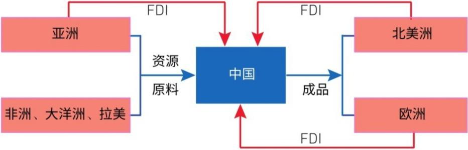
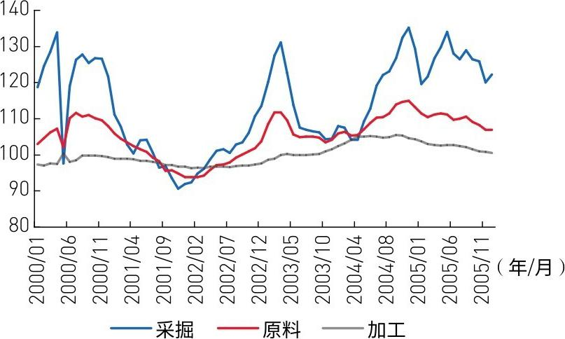
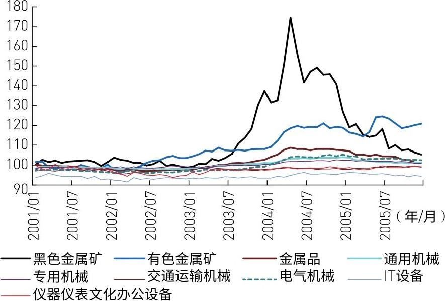
当今世界经济是一个三极共生模式：
🔵 资源核心国（OPEC、巴西、澳大利亚）：负责提供原材料，但自己不消耗太多
🟡 制造核心国（中国）：负责把资源变成产品，严重依赖出口
🔴 消费（货币）核心国（美国）：负责印钱和消费，占据货币主导地位
三个齿轮互相咬合：美国消费 → 中国制造 → 资源国供应。谁也不能单独脱离这个链条——脱离比留在里面更惨。
三类国家都依靠比较优势进入同一条纵向产业链：资源国卖原料、制造国加工、消费国提供最终需求和货币。任何一方突然退出都会同时损害自身和其他环节，因此形成相互依赖。
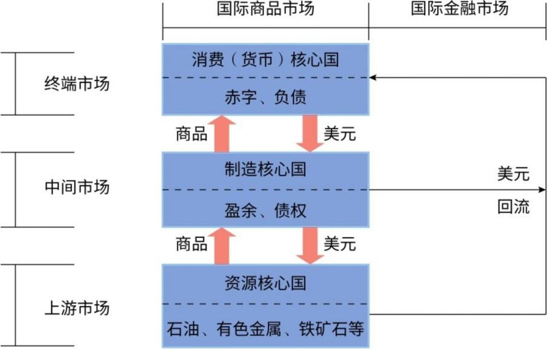
这个共生模式的核心链条：美国消费 → 中国制造出口赚美元 → 中国拿美元买美国国债 → 压低了美国利率 → 美国人借钱消费更容易 → 继续消费……无限循环。但这里有一个关键前提：美元信用不能出问题。一旦美元信用动摇，整个循环就崩了。
传统调节能够成立，是因为生产者与消费者处在同一国内环境，资源行业和下游行业的利益冲突也能由同一政府协调。全球化分工把这些角色拆到不同国家后，成本、消费和政策不再由同一主体共同决定。
资源涨价会吸引上游投资，同时挤压中下游利润和居民需求。经济减速与供给增加最终共同消除缺口，所以1970年代的商品急涨后又出现急跌。滞胀本身就是这套调整的代价。
在传统模式下，一个国家内部可以通过"利润在上下游之间重新分配"来调节资源价格。但共生模式下，上下游变成了三个不同的国家——资源国的利益、制造国的利益、消费国的利益，各不相让。调节变成了国际政治博弈，远比国内博弈困难。
更关键的是：生产与消费分离了。以前是自己生产自己消费，价格涨了自己选少买点。现在中国的生产不由中国自己决定——欧美消费者还在买买买，中国工厂就得继续生产、继续消耗资源，哪怕利润已经薄得像纸。传统的"涨价→需求减少→价格回落"的自动调节机制失灵了。
传统模式靠通胀和衰退压低需求；共生模式中，中国制造业先吸收成本，使欧美通胀和需求下降来得更晚。但压力没有消失，只是改由汇率、利润和政策等渠道传导。
资源涨价最终只能表现为消费者物价上升，或企业利润下降。共生模式把生产和消费分在不同国家后，汇率会重新分配各国购买力和产业利润，因此成为新的内生调节器。
人民币升值会提高中国出口品的外币价格，削弱美国消费者购买力，出口与生产随后放慢，资源需求压力从源头减弱。短期内，升值也可能降低进口原料的人民币成本，帮助工业利润反弹；但长期出口下降后，需求收缩仍可能再次压低利润。
除汇率外，资源税、能源税和限制高耗能产业等政策也能改变资源需求。作者认为，共生模式下的调整将由汇率和产业政策共同完成，而不是只靠国内物价上涨。
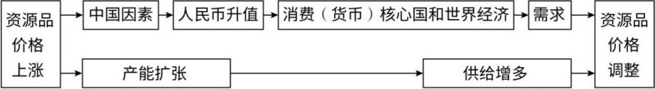
整个共生模式建立在美元信用之上。但美元信用正在被透支——美国贸易赤字大到离谱，长期来看还钱的希望越来越渺茫。这就像一个人信用卡刷爆了还在刷，迟早要出事。
这里有一个经典的"囚徒困境"：所有外围国家（中国、资源国）的集体利益是继续持有美元、维护美元信用（不然自己的美元储备也贬值）。但每个国家的个体利益是抢先抛售美元、减少损失。一旦有一个国家开始抛，羊群效应就可能引发崩塌——共生模式可能在某个偶然因素的刺激下突然瓦解。
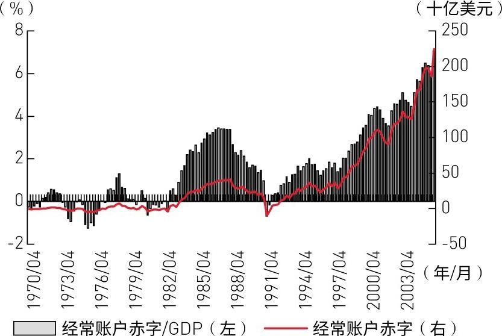
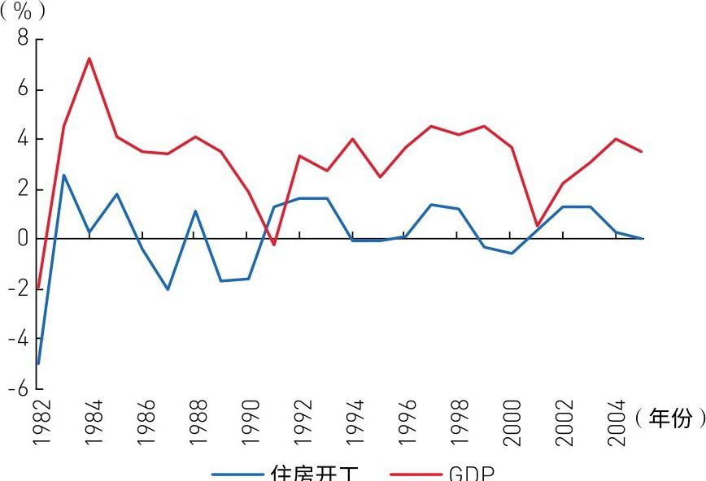
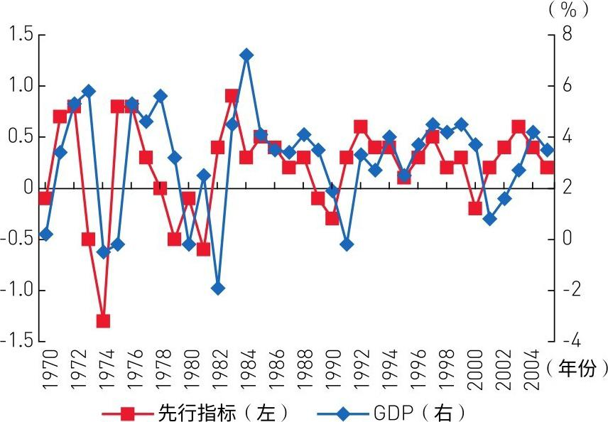
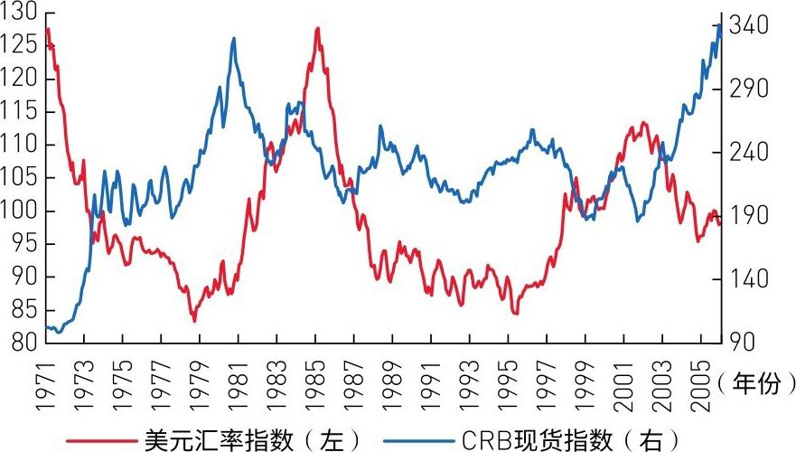
共生模式让世界经济"看起来"更能扛得住资源涨价了。但实际上，新的调节机制（汇率升值、产业政策等）正在从根部侵蚀牛市的根基。失衡的共生模式不可持续——美国资产泡沫要么破裂（全球经济衰退），要么继续膨胀（未来更大的灾难）。软着陆是最好的愿望，但能不能实现，存疑。但不管怎样，对商品牛市来说都是利空。
还有一个问题：2004年世界经济就见顶了，为什么2005-2006年大宗商品还在高位？难道我们看周期的框架错了？答案是：没错。这是虚拟经济对实体经济的时滞。
实体经济繁荣虽然已经在2004年见顶了，但为什么2005-2006年资源品价格还在高位？这是虚拟经济对实体经济的滞后效应：
实体经济不行了 → 资金从实体撤出 → 但钱还在（流动性充裕）→ 钱涌入虚拟经济（期货、股市）→ 虚拟经济继续繁荣一段时间 → 给人一种"经济还很好"的错觉。
你看到的大宗商品价格高位，反映的是过去的供需缺口，不代表未来趋势。
当实体投资过多、回报下降时，资金转向股票、房地产和商品等资产，暂时减少实体部门继续堆积资本，使剩余实体资本的回报改善。虚拟市场繁荣因此可能延后实体调整。
资产和商品价格可以在实体增长见顶后继续上涨。如果只看当下价格强势，就容易把上一阶段留下的资金和供给缺口误判成未来需求仍会持续增长。
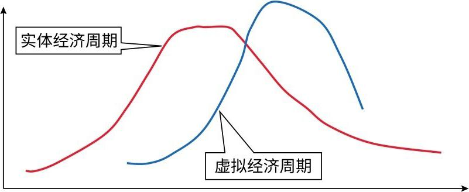
供需两条线不是同步的：供给周期落后于需求周期。当需求已经开始回落了，供给端还没反应过来——之前投资的矿山还在建、油井还在钻。所以实体经济见顶之后，资源的供给缺口还会存在一段时间，价格不会立刻跌。但这是"滞后"，不是"永恒"。
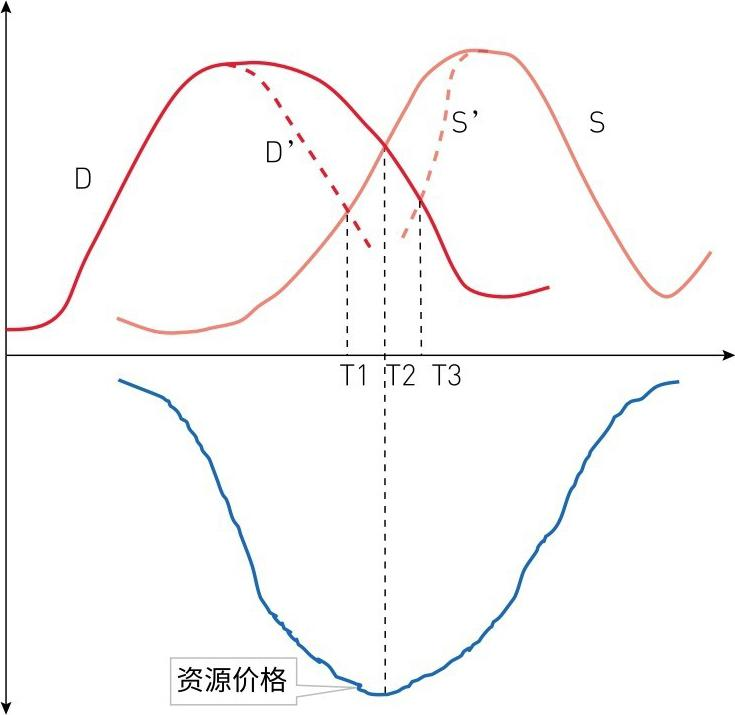
以原油为例：2004年供需已经过剩了，2005年过剩更多——但油价在2005年8月还在创新高。价格滞后供需变化大约一年。之后油价不再上涨，高位震荡，进入了"止涨"阶段。
以此推算各类资源品的见顶时刻：
🥉 铜 → 2006年可能见顶
🛢️ 原油 → 继续高位震荡
🪨 铅 → 滞后效应，仍可能保持高位
🥇 黄金、锌、锡、铝 → 供不应求，仍有上升空间
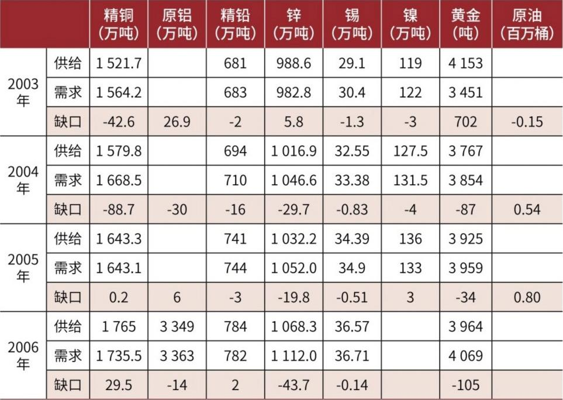
不同资产的滞后时间不同：期货（跟实体联系最紧）→ 最先见顶；房地产和股票（虚拟程度更高）→ 可以滞后更久。
作者在2005年的最终判断是：实体增长高点已经过去，供需缺口也在逐渐弥合。商品价格越是在周期末端急涨，越可能是在反映过去的短缺和投机，而不是新的长期繁荣，泡沫破裂风险反而更高。
"色即是空"——所有表象最终都要回归本质。这篇2005年9月的报告建立了理解全球资源品价格的完整框架：
1. 供需是根本。大牛市配方 = 长波衰退（供给常年不足）+ 中周期反弹（需求突然暴增）。2000-2008年正处于第五次长波衰退期 → 大牛市不是偶然。
2. 共生模式让传统调节机制失灵。世界分成三个阵营：资源国（OPEC、巴西）、制造国（中国）、消费国（美国）。生产与消费分离 → 涨价不会自动引发需求减少 → 以前的"滞胀式"调节失效。
3. "中国因素"是伪命题。中国是世界的加工厂——为全球生产，当然为全球消耗资源。真正的中国因素是：中国牺牲制造业利润，为欧美扛住了通胀，从而延长了全球繁荣周期和资源品牛市。
4. 汇率成为新调节器。共生模式下，人民币升值替代了物价上涨来调节资源品价格。
5. 美元信用是命门。整个共生模式建立在美元信用之上。美元信用被透支 → 囚徒困境 → 随时可能崩塌。
6. 牛市进入歇斯底里阶段。供需已在转变，价格滞后反映。铜2006年见顶，原油高位震荡，黄金锌锡铝还有空间。牛市的最后一站，总是最疯狂的——也最接近终点。
| 原文术语 | 大白话解释 |
|---|---|
| 色即是空 | 佛家语，表象终将回归本质——资源品价格无论多疯狂，终将回归供需基本面 |
| CRB / GSCI | 两个最权威的国际大宗商品价格指数 |
| 共生模式 | 资源国（供原料）+ 制造国（中国加工）+ 消费国（美国印钱消费）互相依赖的模式 |
| 资源核心国 | OPEC、巴西、澳大利亚等——只负责出口资源、不消耗太多 |
| 制造核心国 | 中国——负责把资源变成产品，严重依赖出口 |
| 消费（货币）核心国 | 美国——负责印钱和消费，美元是全球货币 |
| 长波衰退 | 50-60年康波周期的下行阶段，资源行业长期投资不足 |
| 滞胀 | 经济停滞 + 物价上涨同时发生——1970年代石油危机的后果 |
| 虚拟经济滞后效应 | 实体经济见顶后，期货/股市还会繁荣一段时间——反映的是过去的供需缺口 |
| 囚徒困境 | 集体利益要求持有美元，但个体利益驱动抢先抛售——共生模式的脆弱点 |
| 动态无效 | 实体经济投资回报率太低，资金不再愿意投入实体——被迫涌入虚拟经济 |
| FDI | 外国直接投资——外资在中国建厂，是产能过剩的重要推手 |